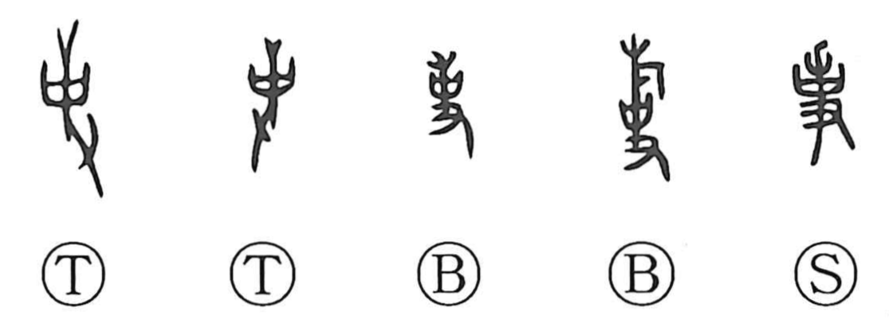

Explanation
事 develops from 史 with an added streamer. 史 shows a hand raising a branch to which a receptacle of written prayers is attached, used to address the ancestral spirits within a sanctuary. For a mission outside, a larger branch bore a streamer, marking the rite carried to another place.
Such external ceremonies included offerings to rivers and mountains. They were ‘great affairs’ or ‘royal affairs,’ and carrying them out meant serving the king's authority. 史, 使, and 事 belong to the same group of ritual and official actions.
From serving in a ceremony come serving a superior, performing a duty, and the business that duty entails. The word then extends to government affairs and to matters, activities, or events generally. The noun ‘affair’ and the verb ‘to serve’ preserve two sides of that development.